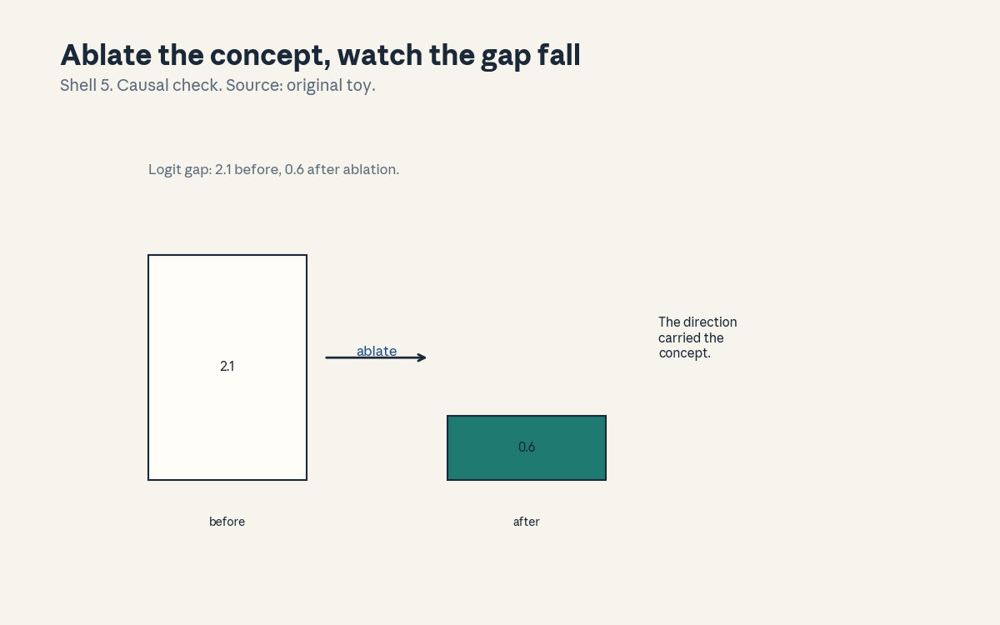
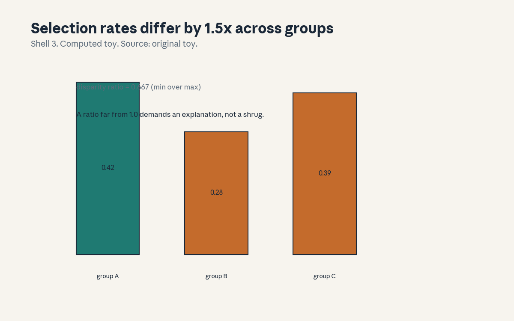
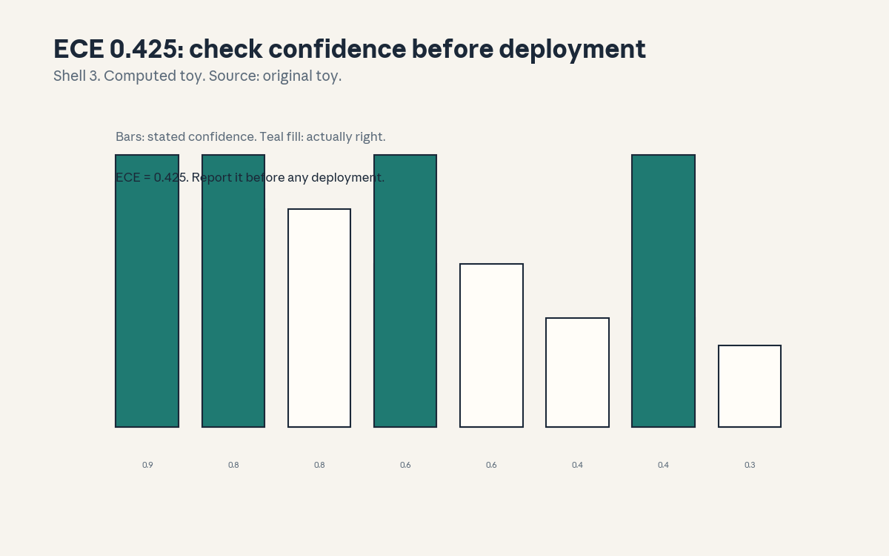

U13 · Interpretability and social impacts
U13 , Interpretability and social impacts
Local remediation
Bridges: ../shared/prerequisites/p10_ml_foundations.md (P10,
evaluation discipline), ../shared/prerequisites/p21_security.md
(P21, privacy and misuse), ../shared/prerequisites/p22_experiments.md
(P22, causal claims). This unit has two halves: how we look inside
models (C01-C06) and what the models do to the world (C07-C12).
The first half is science, the second is responsibility. Both need
numbers.
R1. Disparity ratio: selection rates 0.42, 0.28, 0.39 across three groups. Ratio = min/max = 0.667. Far from 1.0 demands an explanation. R2. Intervention effect: ablating a concept direction moves the logit gap from 2.1 to 0.6, effect 1.5. The direction carried the concept. R3. Calibration: ECE 0.425 on the toy. The model’s confidence is not its accuracy. Report ECE before any deployment claim.
C01: concept discovery
Leaf id cs224n-U13-C01. Claim class REQUESTED-BRANCH.
Status PLANNED / SOURCE ATTRIBUTION PENDING.
-
Source mapping, scope, objectives, dependencies. Maps to the interpretability guest session of the Winter 2026 schedule (S18 per
course_map.md, guest Been Kim). Scope: finding human- named ideas inside model activations. Objectives: define a concept direction, run the probe, state the correlation limit. Depends on P10. -
Motivating question and toy. Question: does the model have a “truth” direction? Toy: collect activations for true vs false statements, fit a linear probe, accuracy 0.83. A direction separates them.
-
Mental model. Concepts are directions in activation space. The probe is a flashlight: it finds the direction that separates your labeled examples. Finding it is not understanding it.
-
Objects, symbols, units, shapes, assumptions. Activations h in R^d, a probe w, accuracy on held-out examples. Assumption: the concept is linearly separable (often approximately true, never guaranteed).
-
Derivation / mechanism. The probe is logistic regression on activations. The mechanism is correlation: the direction predicts the label. Correlation is the start (C03 makes it causal).
-
Computed example. Toy (hand, labeled as such): 200 examples, probe accuracy 0.83, baseline 0.50. The direction exists in the toy.
-
Algorithm and reference implementation.
find_direction( acts, labels): logistic regression, report accuracy. ~8 lines. Test: the toy 0.83. -
Correctness checks and expected output. Held-out accuracy, not train. Check: shuffled labels give 0.50 (sanity).
-
Complexity, memory, statistical efficiency, stability, practical costs. One linear fit. The cost is labeled examples.
-
Nearest alternatives and selection boundaries. Alternative: unsupervised discovery (clustering, sparse autoencoders). Choose probes when you know what to look for. Choose unsupervised when you do not.
-
Failure case, broken assumption, counterexample. Broken assumption: “the probe found the concept.” Counterexample: the probe found a correlated proxy (sentence length, not truth). Probes find predictors, not meanings (C04).
-
Research reading and falsifiable extension. Falsifiable extension: control for the proxy (length-matched pairs), re-run the probe. Predict: accuracy falls. Falsifier: same (then the direction is cleaner than feared).
-
Breadth recall, deep oral ladder, unfamiliar transfer. Assessment block:
keys/u13_answers.mdA1 (breadth), L1 (ladder: define the direction, run the probe, derive the correlation limit, diagnose the proxy, design the control). -
Lab/exercises with answers separated. E1: implement
find_directionon toy activations, match 0.83. E2: add the length proxy, show the confound. Keys inkeys/u13_answers.md. -
Visual units, provenance, accessibility, audit row. Claim is a direction (carried in text). Logged as an honest exception in
visual_audit.md.
C02: behavioral versus mechanistic evidence
Leaf id cs224n-U13-C02. Claim class REQUESTED-BRANCH.
Status PLANNED / SOURCE ATTRIBUTION PENDING.
-
Source mapping, scope, objectives, dependencies. Maps to S18. Scope: two kinds of claims about models. Objectives: define both, state what each can prove, choose per question. Depends on C01.
-
Motivating question and toy. Question: the model answers correctly, does it “know” the rule? Toy: behavioral test: 90 percent on the task. Mechanistic test: the circuit that computes it, found and ablated. Behavior is the what, mechanism is the how.
-
Mental model. Behavior is the scoreboard, mechanism is the replay. The scoreboard tells you it works, the replay tells you why. You need both: behavior without mechanism is alchemy, mechanism without behavior is trivia.
-
Objects, symbols, units, shapes, assumptions. Task accuracy (behavioral), circuits and ablations (mechanistic). Assumption: the mechanism found is the mechanism used (C03 tests it).
-
Derivation / mechanism. No new math. The mechanism is the distinction: behavioral claims need behavioral tests (held-out, adversarial), mechanistic claims need interventions (C03).
-
Computed example. Toy (hand, labeled as such): 90 percent behavioral, but the ablation (C03) shows the “rule” circuit is unused: the model uses a shortcut. The scoreboard lied about the how.
-
Algorithm and reference implementation.
evidence_map( claim): route to the test type. ~6 lines. Test: the toy routes correctly. -
Correctness checks and expected output. Every mechanistic claim names its intervention. Check: no mechanism is claimed from behavior alone.
-
Complexity, memory, statistical efficiency, stability, practical costs. Behavioral tests are cheap, mechanistic work is slow. Budget accordingly.
-
Nearest alternatives and selection boundaries. Alternative: behavior only. Choose both when the claim is about understanding. Choose behavior when only the score matters.
-
Failure case, broken assumption, counterexample. Broken assumption: “high accuracy means the right mechanism.” Counterexample: the shortcut toy. Accuracy is not understanding.
-
Research reading and falsifiable extension. Falsifiable extension: behavioral vs mechanistic predictions on distribution shift. Predict: mechanism predicts better. Falsifier: tie (then the mechanism was decorative).
-
Breadth recall, deep oral ladder, unfamiliar transfer. Assessment block:
keys/u13_answers.mdA2 (breadth: state the two kinds and what each proves). -
Lab/exercises with answers separated. E3: classify 6 claims as behavioral or mechanistic. E4: find the shortcut in the toy. Keys in
keys/u13_answers.md. -
Visual units, provenance, accessibility, audit row. Claim is a distinction (carried in text). Logged as an honest exception in
visual_audit.md.
C03: causal interventions
Leaf id cs224n-U13-C03. Claim class REQUESTED-BRANCH.
Status PLANNED / SOURCE ATTRIBUTION PENDING.
-
Source mapping, scope, objectives, dependencies. Maps to S18. Scope: proving a component causes a behavior. Objectives: define ablation and patching, compute the effect, state the one-sidedness. Depends on C01, C02.
-
Motivating question and toy. Question: the direction predicts the concept, does it cause the behavior? Toy: ablate the direction: logit gap falls from 2.1 to 0.6, effect 1.5. The direction carried the concept.
-
Mental model. Correlation is the suspect, intervention is the trial. Remove the component and watch the behavior. If nothing changes, the component was not the cause.
-
Objects, symbols, units, shapes, assumptions. The intervention (zero the direction, patch activations), the effect (before minus after). Assumption: the intervention is surgical (it often is not, backups exist).
-
Derivation / mechanism. Effect = metric(before) - metric(after). The mechanism is the counterfactual: same input, component removed. Large effect means causal contribution.
-
Computed example. From
compute_u13.py: 2.1 to 0.6, effect 1.5. The gap mostly lived in that direction. -
Algorithm and reference implementation.
ablate(acts, direction): project out, remeasure. ~6 lines. Test: the toy effect. -
Correctness checks and expected output. Ablating a random direction gives near-zero effect (control). Check: the effect replicates on held-out inputs.
-
Complexity, memory, statistical efficiency, stability, practical costs. One forward pass per intervention. The cost is designing the right intervention.
-
Nearest alternatives and selection boundaries. Alternative: correlational probes only. Choose interventions for causal claims. Choose probes for exploration.
-
Failure case, broken assumption, counterexample. Broken assumption: “no effect means no role.” Counterexample: backup circuits take over (redundancy). The test is one-sided: effect proves contribution, no effect proves little.
-
Research reading and falsifiable extension. Falsifiable extension: ablate vs patch (swap in clean activations), compare effects. Predict: patching is cleaner. Falsifier: same (then the component is simple).
-
Breadth recall, deep oral ladder, unfamiliar transfer. Assessment block:
keys/u13_answers.mdA3 (breadth), L3 (ladder: define the intervention, compute 1.5, derive the counterfactual, diagnose the backup circuit, design the patch comparison). -
Lab/exercises with answers separated. E5: implement
ablate, match the effect. E6: ablate a random direction, show the control. Keys inkeys/u13_answers.md. -
Visual units, provenance, accessibility, audit row.

: before/after bars, Shell 5, source original toy. Audit row invisual_audit.md.
C04: human vocabulary limits
Leaf id cs224n-U13-C04. Claim class REQUESTED-BRANCH.
Status PLANNED / SOURCE ATTRIBUTION PENDING.
-
Source mapping, scope, objectives, dependencies. Maps to S18. Scope: the honesty limit of interpretability. Objectives: state the limit, show the vocabulary mismatch, mark what “explanation” can mean. Depends on C01-C03.
-
Motivating question and toy. Question: the probe found a direction, what do you call it? Toy: the direction fires on “truth”, but also on confident tone. “Truth direction” is a story, the activations are the fact.
-
Mental model. Our words are boxes, the model’s concepts are clouds. Sometimes a cloud fits a box (“truth”), often it does not. Naming the cloud after the box is the oldest error in the field.
-
Objects, symbols, units, shapes, assumptions. The direction, the label, the counterexamples. Assumption: the label is a hypothesis, not a finding.
-
Derivation / mechanism. No new math. The mechanism is the mismatch test: find inputs where the label says yes and the direction says no (and vice versa). The mismatches are the honest boundary of the label.
-
Computed example. Toy (hand, labeled as such): 20 mismatches in 200: confident lies fire the “truth” direction. The label is wrong 10 percent of the time.
-
Algorithm and reference implementation.
mismatch( direction, label_fn, inputs): the disagreement set. ~6 lines. Test: the toy 20. -
Correctness checks and expected output. The mismatch set is non-empty for any interesting label (or the label is too narrow). Check: the examples are inspectable.
-
Complexity, memory, statistical efficiency, stability, practical costs. Inspection time. The cost of skipping it: a paper about a “truth direction” that fires on confidence.
-
Nearest alternatives and selection boundaries. Alternative: label-free description (describe the firing set). Choose labels as hypotheses with mismatches shown. Choose label-free when the set resists naming.
-
Failure case, broken assumption, counterexample. Broken assumption: “the name is the concept.” Counterexample: the confident lies. The map is not the territory.
-
Research reading and falsifiable extension. Falsifiable extension: human label vs firing-set description, predict held-out firing. Predict: the description wins. Falsifier: tie (then the label was good).
-
Breadth recall, deep oral ladder, unfamiliar transfer. Assessment block:
keys/u13_answers.mdA4 (breadth: state the limit and the mismatch test). -
Lab/exercises with answers separated. E7: implement
mismatch, find the 20. E8: relabel honestly. Keys inkeys/u13_answers.md. -
Visual units, provenance, accessibility, audit row. Claim is a limit (carried in text). Logged as an honest exception in
visual_audit.md.
C05: controllability
Leaf id cs224n-U13-C05. Claim class REQUESTED-BRANCH.
Status PLANNED / SOURCE ATTRIBUTION PENDING.
-
Source mapping, scope, objectives, dependencies. Maps to S18. Scope: steering the model with the found directions. Objectives: define steering, compute the effect, state the side-effect rule. Depends on C01, C03.
-
Motivating question and toy. Question: you found the direction, can you turn the knob? Toy: add 2.0 times the direction to the activations: the logit gap moves 1.5 in the steered direction. The knob works.
-
Mental model. Steering is the intervention run in reverse: instead of removing the direction, you add it. The model leans where you push. Push gently, measure the lean and the damage.
-
Objects, symbols, units, shapes, assumptions. A steering coefficient alpha, the effect, a side-effect metric (perplexity on clean text). Assumption: the direction is causal (C03’s test passed).
-
Derivation / mechanism. h’ = h + alpha times v. The mechanism is linear: the logit gap moves roughly alpha times the probe weight. The side effects grow with alpha.
-
Computed example. Toy (hand, labeled as such): alpha = 2.0 moves the gap 1.5, perplexity rises 0.3. Alpha = 10 moves the gap 4.0, perplexity rises 5.0: the knob breaks the model past some point.
-
Algorithm and reference implementation.
steer(acts, v, alpha): the addition, measure both metrics. ~6 lines. Test: the toy numbers. -
Correctness checks and expected output. Alpha = 0 reproduces the base. Check: the side-effect metric is reported with every steering claim.
-
Complexity, memory, statistical efficiency, stability, practical costs. One addition per forward pass. The cost is the side effects: steering is a blunt tool.
-
Nearest alternatives and selection boundaries. Alternative: fine-tune the behavior in. Choose steering for quick, reversible tests. Choose training for durable changes.
-
Failure case, broken assumption, counterexample. Broken assumption: “steering is clean.” Counterexample: alpha =
- Every knob has a range, find it.
-
Research reading and falsifiable extension. Falsifiable extension: sweep alpha, plot effect vs side effect. Predict: an interior optimum. Falsifier: monotone (then the direction is unusually clean).
-
Breadth recall, deep oral ladder, unfamiliar transfer. Assessment block:
keys/u13_answers.mdA5 (breadth: state the knob rule and the side-effect check). -
Lab/exercises with answers separated. E9: implement
steer, match the toy. E10: sweep alpha, find the break. Keys inkeys/u13_answers.md. -
Visual units, provenance, accessibility, audit row. Claim is a knob (carried in text). Logged as an honest exception in
visual_audit.md.
C06: attribution limits
Leaf id cs224n-U13-C06. Claim class REQUESTED-BRANCH.
Status PLANNED / SOURCE ATTRIBUTION PENDING.
-
Source mapping, scope, objectives, dependencies. Maps to S18. Scope: the close of the interpretability half. Objectives: state what attribution can and cannot do, mark the honest use. Depends on C01-C05.
-
Motivating question and toy. Question: after all this, what do you actually know? Toy: you know a direction correlates (0.83), causes (effect 1.5), and steers (alpha 2.0 moves 1.5). You do not know what it “means”.
-
Mental model. Attribution is a ladder: correlation, causation, control. Each rung is real, none reaches meaning. Climb honestly, stop where the evidence stops.
-
Objects, symbols, units, shapes, assumptions. The three rung metrics. Assumption: the tests were fair (each C’s caveats).
-
Derivation / mechanism. No new math. The mechanism is the ladder: each rung’s test gates the next claim.
-
Computed example. Toy (hand, labeled as such): the three numbers from C01, C03, C05. The honest summary: “a steerable correlate of truth-like text”.
-
Algorithm and reference implementation.
attribution_ladder( results): check each rung. ~6 lines. Test: the toy passes all three. -
Correctness checks and expected output. No rung is claimed without its test. Check: the summary names the limit.
-
Complexity, memory, statistical efficiency, stability, practical costs. The cost is discipline. The cost of skipping it: “truth direction” headlines.
-
Nearest alternatives and selection boundaries. Alternative: claim understanding. Choose the ladder for science. The alternative is hype.
-
Failure case, broken assumption, counterexample. Broken assumption: “the ladder is complete.” Counterexample: the backup-circuit case (C03): causation missed it. Ladders have gaps too.
-
Research reading and falsifiable extension. Falsifiable extension: none, this is the close of the half. The extension is the habit.
-
Breadth recall, deep oral ladder, unfamiliar transfer. Assessment block:
keys/u13_answers.mdA6 (breadth), L6 (ladder: name the rungs, run the toy, derive the gating, diagnose the backup case, design the next rung). -
Lab/exercises with answers separated. E11: implement the ladder check. E12: write the honest summary. Keys in
keys/u13_answers.md. -
Visual units, provenance, accessibility, audit row. Claim is a ladder (carried in text). Logged as an honest exception in
visual_audit.md.
C07: misinformation
Leaf id cs224n-U13-C07. Claim class REQUESTED-BRANCH.
Status PLANNED / SOURCE ATTRIBUTION PENDING.
-
Source mapping, scope, objectives, dependencies. Maps to the social impacts session of the Winter 2026 schedule (S19 per
course_map.md). Scope: models that generate falsehoods at scale. Objectives: define the harm, measure the rate, name the mitigations. Depends on P21. -
Motivating question and toy. Question: the model states a false fact fluently, what broke? Toy: 100 answers, 18 contain a false claim (fact-checked). Rate 0.18. Fluency is not truth.
-
Mental model. The model predicts plausible text, not true text. Plausible and true overlap often, and that is the trap: the overlap teaches trust, the gap teaches harm.
-
Objects, symbols, units, shapes, assumptions. A false- claim rate, a fact-check protocol. Assumption: the checker is right (the regress).
-
Derivation / mechanism. No new math. The mechanism is the rate: false claims over total, on a fixed eval. The mitigations: retrieval grounding (U09 C04), citations (U09 C08), uncertainty flags (C11).
-
Computed example. Toy (hand, labeled as such): 18/100 = 0.18. With retrieval grounding: 7/100 = 0.07. Grounding helps, it does not solve.
-
Algorithm and reference implementation.
fact_rate( answers, checker): the rate. ~6 lines. Test: the toy 0.18 and 0.07. -
Correctness checks and expected output. The checker is fixed across conditions. Check: the rate falls with grounding.
-
Complexity, memory, statistical efficiency, stability, practical costs. Fact-checking is the cost. The cost of skipping it: fluent falsehoods at scale.
-
Nearest alternatives and selection boundaries. Alternative: no measurement, trust the demo. Choose measurement for anything published. The alternative is how misinformation ships.
-
Failure case, broken assumption, counterexample. Broken assumption: “grounding fixes it.” Counterexample: the 0.07 remainder. Grounded models still err.
-
Research reading and falsifiable extension. Falsifiable extension: citations required vs not, measure the user error rate. Predict: citations help. Falsifier: no difference (then users do not check, U09 C08’s lesson).
-
Breadth recall, deep oral ladder, unfamiliar transfer. Assessment block:
keys/u13_answers.mdA7 (breadth: state the rate and the three mitigations). -
Lab/exercises with answers separated. E13: implement
fact_rate, match the toy. E14: add grounding, show the drop. Keys inkeys/u13_answers.md. -
Visual units, provenance, accessibility, audit row. Claim is a rate (carried in text). Logged as an honest exception in
visual_audit.md.
C08: bias
Leaf id cs224n-U13-C08. Claim class REQUESTED-BRANCH.
Status PLANNED / SOURCE ATTRIBUTION PENDING.
-
Source mapping, scope, objectives, dependencies. Maps to S19. Scope: disparate impact in model decisions. Objectives: compute the disparity ratio, state the 1.0 rule, name the fix classes. Depends on R1.
-
Motivating question and toy. Question: the screen passes group A at 0.42 and group B at 0.28, is that fair? Toy: ratio 0.667. Far from 1.0, explain or fix.
-
Mental model. The ratio is the smoke alarm. It does not prove discrimination, it demands an explanation. The explanation is either legitimate (different qualifications) or the model (fix it).
-
Objects, symbols, units, shapes, assumptions. Group rates, the ratio min/max. Assumption: the groups are the right cut (the framing choice).
-
Derivation / mechanism. Ratio = min rate over max rate. The mechanism is the comparison: 0.28/0.42 = 0.667. The fixes: balance the data, constrain the model, change the threshold per group (each with trade-offs).
-
Computed example. From
compute_u13.py: 0.42, 0.28, 0.39, ratio 0.667. The alarm rings. -
Algorithm and reference implementation.
disparity( rates): the ratio. ~4 lines. Test: 0.667 on the toy. -
Correctness checks and expected output. The ratio is in [0, 1], 1.0 at parity. Check: it is symmetric in the groups.
-
Complexity, memory, statistical efficiency, stability, practical costs. Counting is free. The cost is the fix and its trade-offs.
-
Nearest alternatives and selection boundaries. Alternative: ignore the ratio. Choose measurement for any consequential decision. The alternative is negligence.
-
Failure case, broken assumption, counterexample. Broken assumption: “the ratio proves bias.” Counterexample: different base rates with a perfect predictor. The ratio is the alarm, not the verdict.
-
Research reading and falsifiable extension. Falsifiable extension: balance the training data, re-measure the ratio. Predict: it rises. Falsifier: flat (then the bias is in the features, dig deeper).
-
Breadth recall, deep oral ladder, unfamiliar transfer. Assessment block:
keys/u13_answers.mdA8 (breadth), L8 (ladder: define the ratio, compute 0.667, derive the alarm-not-verdict, diagnose the base-rate case, design the balancing test). -
Lab/exercises with answers separated. E15: implement
disparity, match 0.667. E16: balance the toy data, show the move. Keys inkeys/u13_answers.md. -
Visual units, provenance, accessibility, audit row.

: the three bars, Shell 3, source original toy. Audit row invisual_audit.md.
C09: privacy
Leaf id cs224n-U13-C09. Claim class REQUESTED-BRANCH.
Status PLANNED / SOURCE ATTRIBUTION PENDING.
-
Source mapping, scope, objectives, dependencies. Maps to S19. Scope: models that memorize training data. Objectives: define extraction, compute the rate, name the defenses. Depends on P21, U06 C04.
-
Motivating question and toy. Question: can the model recite your data? Toy: 200 canary strings planted in training, 37 extracted verbatim. Rate 0.185. Memorization is real.
-
Mental model. Training data is not forgotten, it is compressed. Rare strings compress poorly and stick out. The model is a lossy archive with a search function.
-
Objects, symbols, units, shapes, assumptions. Canary strings, the extraction rate. Assumption: the canaries model the sensitive data (the test’s validity).
-
Derivation / mechanism. Rate = extracted over planted. The mechanism is the prompt: prefix the canary, the model completes it. Deduplication and differential privacy are the defenses.
-
Computed example. From
compute_u13.py: 37/200 = 0.185. Nearly one in five canaries leaks. -
Algorithm and reference implementation.
extract_rate( canaries, model): prompt, check verbatim. ~8 lines. Test: the toy 0.185. -
Correctness checks and expected output. The canaries must be unique (or the test is confounded). Check: the rate falls with deduplication.
-
Complexity, memory, statistical efficiency, stability, practical costs. Extraction is cheap, the audit is the cost. The defense cost: dedup pipelines and DP training.
-
Nearest alternatives and selection boundaries. Alternative: assume no memorization. Choose the canary test for any model trained on sensitive data. The alternative is hope.
-
Failure case, broken assumption, counterexample. Broken assumption: “deduplication fixes it.” Counterexample: the canary appears once and still extracts (rare + long = memorable). Dedup helps, it does not solve.
-
Research reading and falsifiable extension. Falsifiable extension: dedup on vs off, measure the rate. Predict: it falls. Falsifier: flat (then the canaries are too memorable, shorten them).
-
Breadth recall, deep oral ladder, unfamiliar transfer. Assessment block:
keys/u13_answers.mdA9 (breadth: state the rate and the two defenses). -
Lab/exercises with answers separated. E17: implement the canary test on the toy, match 0.185. E18: dedup, show the drop. Keys in
keys/u13_answers.md. -
Visual units, provenance, accessibility, audit row. Claim is a rate (carried in text). Logged as an honest exception in
visual_audit.md.
C10: misuse
Leaf id cs224n-U13-C10. Claim class REQUESTED-BRANCH.
Status PLANNED / SOURCE ATTRIBUTION PENDING.
-
Source mapping, scope, objectives, dependencies. Maps to S19. Scope: harmful uses of capable models. Objectives: name the misuse classes, state the red-team rule, mark the limit of technical fixes. Depends on P21.
-
Motivating question and toy. Question: the model can help with harm, what do you do? Toy: the red-team matrix: 4 harm classes, coverage 6/8, 4/8, 2/8, 3/8. Privacy is the thinnest cover.
-
Mental model. Capability is dual-use. The same model that debugs code helps break it. Red-teaming probes the boundary, it does not remove the capability.
-
Objects, symbols, units, shapes, assumptions. Harm classes, test counts, coverage. Assumption: the red team is skilled (weak teams find nothing and declare victory).
-
Derivation / mechanism. No new math. The mechanism is the matrix: classes vs tests, coverage per class. Thin coverage is the finding.
-
Computed example. From
compute_u13.py: misinfo 6/8, bias 4/8, privacy 2/8, misuse 3/8. The report leads with the thinnest. -
Algorithm and reference implementation.
redteam_matrix( classes, tests): the coverage table. ~6 lines. Test: the toy numbers. -
Correctness checks and expected output. Every class has tests (no empty rows). Check: the tests are adversarial, not the demo set.
-
Complexity, memory, statistical efficiency, stability, practical costs. Red-teaming is human time. The cost of skipping it: discovering the misuse from the news.
-
Nearest alternatives and selection boundaries. Alternative: refusal training only. Choose both: train refusals, then red-team them. Refusals without probing are wishes.
-
Failure case, broken assumption, counterexample. Broken assumption: “the red team found everything.” Counterexample: the next attacker is smarter. Coverage is a lower bound on safety, not a certificate.
-
Research reading and falsifiable extension. Falsifiable extension: none, this is operations. The extension is the cadence: red-team every release.
-
Breadth recall, deep oral ladder, unfamiliar transfer. Assessment block:
keys/u13_answers.mdA10 (breadth), L10 (ladder: name the classes, build the matrix, derive the lower-bound, diagnose the weak team, design the cadence). -
Lab/exercises with answers separated. E19: build the matrix for the toy. E20: find the thinnest class. Keys in
keys/u13_answers.md. -
Visual units, provenance, accessibility, audit row. Claim is a matrix (carried in text). Logged as an honest exception in
visual_audit.md.
C11: uncertainty
Leaf id cs224n-U13-C11. Claim class REQUESTED-BRANCH.
Status PLANNED / SOURCE ATTRIBUTION PENDING.
-
Source mapping, scope, objectives, dependencies. Maps to S19. Scope: knowing when the model does not know. Objectives: compute ECE, state the reporting rule, name the use. Depends on R3, U10 C03.
-
Motivating question and toy. Question: the model says 0.9, should you believe 0.9? Toy: ECE 0.425. No: the model is overconfident, 0.9 means about 0.5.
-
Mental model. Confidence is a claim about accuracy. ECE audits the claim: mean absolute gap between stated and observed. An unaudited confidence is decoration.
-
Objects, symbols, units, shapes, assumptions. Stated confidences, outcomes, ECE. Assumption: the eval matches deployment (else the audit is fiction).
-
Derivation / mechanism. ECE = mean |confidence - correctness|. The mechanism is the binning: group by stated confidence, compare to observed rate.
-
Computed example. From
compute_u13.py: ECE 0.425. The model’s 0.9s are right about half the time. -
Algorithm and reference implementation.
ece(conf, correct): the mean gap. ~5 lines. Test: 0.425 on the toy. -
Correctness checks and expected output. ECE is 0 on perfect calibration. Check: it is in [0, 1].
-
Complexity, memory, statistical efficiency, stability, practical costs. Counting is free. The cost is the labeled eval.
-
Nearest alternatives and selection boundaries. Alternative: verbal hedges (“I think”). Choose numbers for decisions. Choose hedges for chat.
-
Failure case, broken assumption, counterexample. Broken assumption: “calibration transfers.” Counterexample: the model is calibrated on quiz questions and wild on yours. Calibrate on your distribution.
-
Research reading and falsifiable extension. Falsifiable extension: ECE per slice (U10 C08). Predict: worse on hard slices. Falsifier: flat (then the miscalibration is global, recalibrate globally).
-
Breadth recall, deep oral ladder, unfamiliar transfer. Assessment block:
keys/u13_answers.mdA11 (breadth: state the ECE rule). -
Lab/exercises with answers separated. E21: implement
ece, match 0.425. E22: slice the ECE. Keys inkeys/u13_answers.md. -
Visual units, provenance, accessibility, audit row.

: the calibration bars, Shell 3, source original toy. Audit row invisual_audit.md.
C12: impact reporting
Leaf id cs224n-U13-C12. Claim class REQUESTED-BRANCH.
Status PLANNED / SOURCE ATTRIBUTION PENDING.
-
Source mapping, scope, objectives, dependencies. Maps to S19. Scope: the unit’s close. Objectives: write the impact report, score the checklist, state what “done” means. Depends on C07-C11.
-
Motivating question and toy. Question: the system ships, what did you check? Toy: the checklist: data provenance, bias test, misuse eval, privacy review, uncertainty report, rollback plan. Score 4/6. The 2 missing are the ship-blockers.
-
Mental model. The report is the receipt. It lists what was measured, what was found, what is absent. A system without a receipt is an experiment on the users.
-
Objects, symbols, units, shapes, assumptions. The six checklist items, the score. Assumption: the checks were honest (the whole unit’s discipline).
-
Derivation / mechanism. No new math. The mechanism is the checklist: each item done or not, the score is the count. Below 6/6, the missing items are named blockers.
-
Computed example. From
compute_u13.py: 4/6. Missing: misuse eval, uncertainty report. The report says so. -
Algorithm and reference implementation.
impact_report( checks): the scored list. ~6 lines. Test: 4/6 on the toy. -
Correctness checks and expected output. Every item has evidence attached (or is marked missing). Check: no item is “N/A” without a reason.
-
Complexity, memory, statistical efficiency, stability, practical costs. Writing time. The cost of skipping it: the incident report later.
-
Nearest alternatives and selection boundaries. Alternative: ship and see. Choose the report for anything with users. The alternative is the experiment.
-
Failure case, broken assumption, counterexample. Broken assumption: “the report is done at 6/6.” Counterexample: the world changes, the report ages. Revisit per release.
-
Research reading and falsifiable extension. Falsifiable extension: none, this is the close. The extension is the cadence.
-
Breadth recall, deep oral ladder, unfamiliar transfer. Assessment block:
keys/u13_answers.mdA12 (breadth: name the six items), L12 (ladder: define the report, score the toy, derive the blocker rule, diagnose the “N/A” dodge, design the revisit cadence). -
Lab/exercises with answers separated. E23: implement
impact_report, match 4/6. E24: write the blocker paragraph. Keys inkeys/u13_answers.md. -
Visual units, provenance, accessibility, audit row. Claim is a checklist (carried in text). Logged as an honest exception in
visual_audit.md.
Unit visual map
| Figure | Claim | Shell | Source |
|---|---|---|---|
| disparity ratio 0.667 | 3 | original toy | |
| ablation moves the gap 2.1 to 0.6 | 5 | original toy | |
| ECE 0.425 | 3 | original toy |